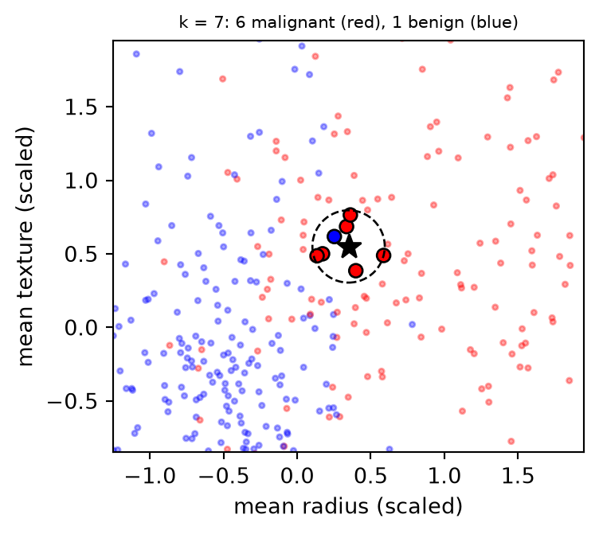
Introduction to Artificial Intelligence and Machine Learning 4
Jiabao.Xu@glasgow.ac.uk
massimo.vassalli@glasgow.ac.uk
Every model so far summarised the training data in a few parameters: weights (2b–5a), a tree (6a), a set of trees (6b). Today two models built on a different idea: a new sample is classified by its similarity to the training samples.
Note
The last supervised lecture before CW2. As in 6a and 6b, imports and data loading (breast cancer, diabetes, the Hastie data of 6b and the digits of 5b, with the usual splits) are in a hidden cell.
The k-nearest neighbours rule (Fix and Hodges, 1951; Cover and Hart, 1967). To classify a new sample \(\mathbf{x}\):
For regression, the prediction is the mean of the neighbours’ targets.

Breast cancer, two features: the star is a new sample, the circle contains its 7 nearest training samples. Here \(\hat p_1 = 6/7 \approx 0.86\), so the prediction is malignant. The neighbourhood is the model: nothing else is learned.
kNN is a non-parametric, lazy method: nothing is learned before a prediction is requested. The decision is taken at prediction time, from the stored samples.
fit stores the samples and, for speed, may organise them in a search structure (a kd-tree or a ball tree, at the end of this section). That is bookkeeping, not learning: the predictions are exactly the same, only faster.
With \(k = 1\), every training sample is its own nearest neighbour:
1-NN: training accuracy 1.000, test accuracy 0.937Training accuracy says nothing for kNN: for \(k = 1\) it is 1 by construction, since each training sample finds itself. A memory-based model can only be judged on samples it has not stored.
Everything depends on what “close” means. The Minkowski distance of order \(p\): \[ d(\mathbf{x}, \mathbf{x}') = \left(\sum_{j=1}^{d}\lvert x_j - x'_j\rvert^p\right)^{1/p} = \lVert\mathbf{x} - \mathbf{x}'\rVert_p \]
metric="minkowski", p=2)The norms are those of the penalties in 5a (\(p = 2\) Ridge, \(p = 1\) Lasso). Other choices: cosine similarity for text (3b), Hamming for categories, Mahalanobis (7b) for correlated features.
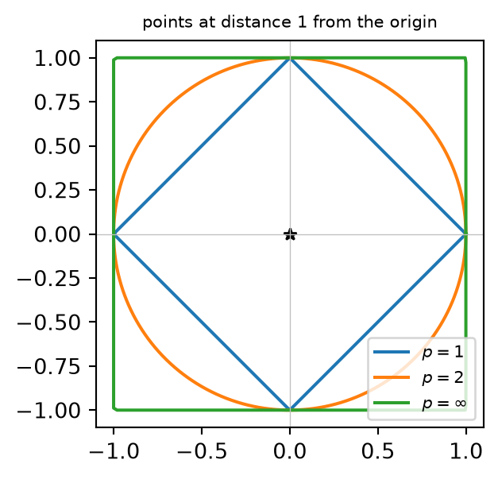
cv = StratifiedKFold(5, shuffle=True, random_state=0) # how to split: 5 stratified folds
Xp = X_train[:, [1, 4]] # mean texture, mean smoothness: a hard pair
fig, axs = plt.subplots(1, 4, figsize=(9, 2.5))
for ax, k in zip(axs, [1, 5, 25, 100]):
knn = make_pipeline(StandardScaler(), KNeighborsClassifier(n_neighbors=k))
acc = cross_val_score(knn, Xp, y_train, cv=cv).mean()
regions(knn, Xp, y_train, ax, f"k = {k}: CV accuracy {acc:.2f}")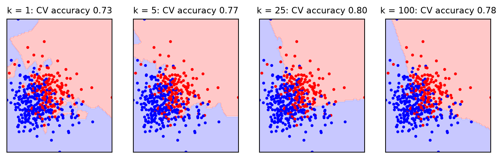
Mean texture and mean smoothness, a pair of features where the classes overlap. With \(k = 1\) the boundary follows every training sample, with islands around isolated points: low bias, high variance (5a), and the lowest CV accuracy. As \(k\) grows, each prediction averages more samples and the boundary smooths; at \(k = 100\) it starts to miss the shape of the classes (bias), and with \(k = n\) every prediction would be the majority class. The effective complexity of kNN grows as \(n/k\): \(k\) plays the role that the depth plays for a tree.
No training does not mean no validation: \(k\) is a hyperparameter, chosen by cross-validation as any other. For a lazy model, each CV round “fits” by storing the training folds only, and predicts every validation sample from its neighbours among them: a validation sample never votes for itself. Fitting is free; the cost is in the predictions.
cv = StratifiedKFold(5, shuffle=True, random_state=0) # how to split: 5 stratified folds
ks = [1, 2, 3, 5, 8, 12, 20, 30, 50, 80, 120]
knn = make_pipeline(StandardScaler(), KNeighborsClassifier())
tr, va = validation_curve(knn, X_train, y_train, param_name="kneighborsclassifier__n_neighbors",
param_range=ks, cv=cv)
fig, ax = plt.subplots(figsize=(4.5, 3))
ax.semilogx(ks, tr.mean(axis=1), "o-", label="training")
ax.semilogx(ks, va.mean(axis=1), "o-", label="validation (CV)")
ax.invert_xaxis() # complexity grows to the right
ax.set_xlabel("$k$ (log scale, decreasing)")
ax.set_ylabel("accuracy")
_ = ax.legend(fontsize=8)
print("CV accuracy:", dict(zip(ks, va.mean(axis=1).round(3))))CV accuracy: {1: np.float64(0.965), 2: np.float64(0.958), 3: np.float64(0.969), 5: np.float64(0.972), 8: np.float64(0.955), 12: np.float64(0.948), 20: np.float64(0.951), 30: np.float64(0.951), 50: np.float64(0.937), 80: np.float64(0.92), 120: np.float64(0.897)}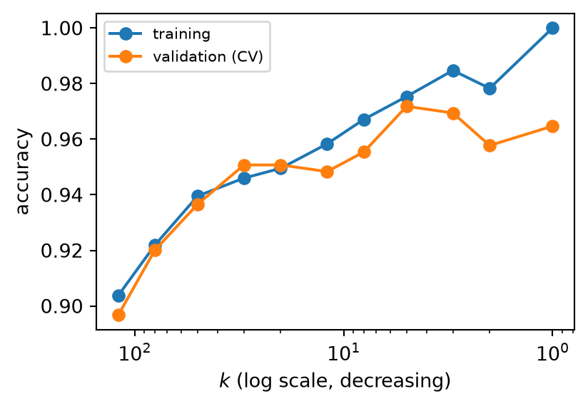
All 30 features, scaled; the axis is reversed so that complexity grows to the right. The training accuracy (each sample predicted from a model that stores it) falls from 1 as \(k\) grows; the validation accuracy is flat between about \(k = 3\) and \(k = 20\) (0.95 to 0.97) and drops for large \(k\) (0.897 at 120). A broad plateau is typical (GridSearchCV, 4b). For two classes, an odd \(k\) avoids ties.
Mean area ranges over about 2000 units, mean smoothness over about 0.1. In raw units, the distance is the difference in area, and the neighbours (black circles) of the star are a vertical strip: smoothness is ignored. After standardising (3b), both features count.
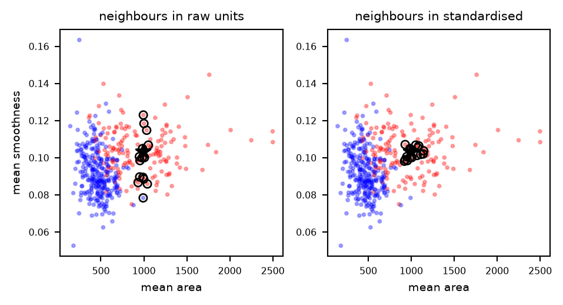
All 30 features of breast cancer, with and without standardisation:
cv = StratifiedKFold(5, shuffle=True, random_state=0) # how to split: 5 stratified folds
for name, m in [("kNN, raw features ", KNeighborsClassifier()),
("kNN, scaled features", make_pipeline(StandardScaler(), KNeighborsClassifier()))]:
print(f"{name}: CV accuracy {cross_val_score(m, X_train, y_train, cv=cv).mean():.3f}")kNN, raw features : CV accuracy 0.927
kNN, scaled features: CV accuracy 0.972Without scaling, the few features measured in large units (the areas, in the thousands) decide every distance. The scaler goes inside the pipeline, fitted on the training folds only (3b). The scale of each feature is an implicit weight in the distance: scaling gives all features the same weight, which is itself a choice (feature selection, 3b–5a, removes the useless ones).
In the plain vote, the 7th neighbour counts as much as the 1st. Distance-weighted kNN gives each neighbour a weight inversely proportional to its distance: \[ \hat p_c(\mathbf{x}) = \frac{\sum_{i \in \mathcal{N}_k(\mathbf{x})} \mathbb{1}(y_i = c)/d(\mathbf{x}, \mathbf{x}_i)}{\sum_{i \in \mathcal{N}_k(\mathbf{x})} 1/d(\mathbf{x}, \mathbf{x}_i)} \]
Far neighbours count little, so a large \(k\) matters less. The price is a training accuracy of 1 for every \(k\) (weights="distance"): each training sample is at distance 0 from itself, its weight \(1/d\) is infinite, and it decides its own prediction alone. The same happens, less extremely, whenever one neighbour is much closer than the others: its weight dominates and the prediction follows it, as 1-NN would. A choice to make by CV, like \(k\).
bmi = Xd_train[:, [2]]
xg = np.linspace(bmi.min() - 0.03, bmi.max() + 0.03, 500).reshape(-1, 1)
fig, ax = plt.subplots(figsize=(4.6, 3.1))
ax.scatter(bmi, yd_train, s=4, color="silver")
for k in [1, 10, 50]:
knr = KNeighborsRegressor(n_neighbors=k).fit(bmi, yd_train)
ax.plot(xg, knr.predict(xg), linewidth=1.2 if k > 1 else 0.6, label=f"k = {k}")
if k == 10: # the window of 10 neighbours at two points
for x0 in [0.0, 0.12]:
dist, _ = knr.kneighbors([[x0]])
ax.axvspan(x0 - dist.max(), x0 + dist.max(), color="C1", alpha=0.2)
ax.set_xlabel("bmi (scaled)"); ax.set_ylabel("progression")
_ = ax.legend(fontsize=8)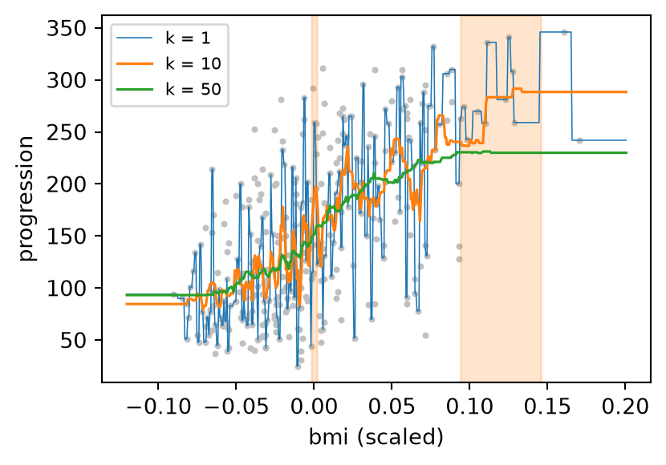
Diabetes, bmi only: the prediction is the mean of the \(k\) nearest targets. Uniform kNN is a moving average with an adaptive window: the window always holds \(k\) samples, so it is narrow where the data are dense and wide where they are sparse (shaded: the windows of \(k = 10\) at bmi 0 and 0.12, about 0.004 and 0.05 wide). The result is piecewise constant, as a regression tree (6a), with steps wherever the set of neighbours changes; beyond the data it is flat: kNN cannot extrapolate. With all ten features (scaled, five folds), the CV \(R^2\) is 0.455, 0.483 and 0.452 for \(k\) = 5, 20, 50, against 0.522 for linear regression: smooth additive trends are what a line does best.
The digits of 5b: each image is a vector of 64 pixel intensities, all in the same units (0–16), so no scaling is needed. Two images are close if they have ink in the same places:
knn_digits = KNeighborsClassifier(n_neighbors=5).fit(Xg_train, yg_train)
pred = knn_digits.predict(Xg_test)
print(f"test accuracy {np.mean(pred == yg_test):.3f}, errors: {np.sum(pred != yg_test)} of {len(yg_test)}")
wrong = np.flatnonzero(pred != yg_test)[0]
_, idx = knn_digits.kneighbors(Xg_test[[wrong]]) # its 5 nearest training imagestest accuracy 0.980, errors: 9 of 450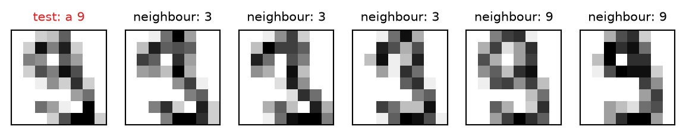
One of the few errors, and its five nearest training images: three of them are 3s, and the vote went to 3. The mistake is understandable: pixel by pixel, this 9 looks like them. kNN is only as good as its distance: on images, Euclidean distance between pixels works for small, centred digits, and fails for shifted or rotated ones (the representations learned by neural networks, weeks 8–10, address this).
In two dimensions, the neighbours of a point are close to it. In many dimensions, they are not:
Take \(n\) points spread uniformly in the unit hypercube \([0, 1]^d\). A neighbourhood that contains a fraction \(r\) of them is a smaller cube of volume \(r\), whose edge is \[ e_d(r) = r^{1/d} \] To capture 1% of the data in \(d = 10\) dimensions, the edge must cover 63% of the range of every feature. The “neighbours” are no longer local: averaging them averages over most of the space.
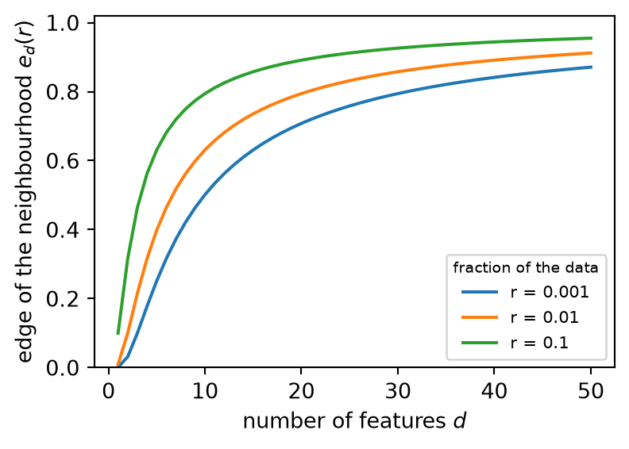
The same argument as in The Elements of Statistical Learning (section 2.5). A fixed number of samples covers the space more and more thinly as \(d\) grows: to keep the same density, \(n\) would have to grow exponentially with \(d\). A related effect: in many dimensions all the distances from a point become similar (the nearest and the farthest sample are almost equally far), so “the nearest” means little, and irrelevant features, which add noise to every distance, make it worse.
Breast cancer with extra features of pure noise (standard normal), five-fold CV:
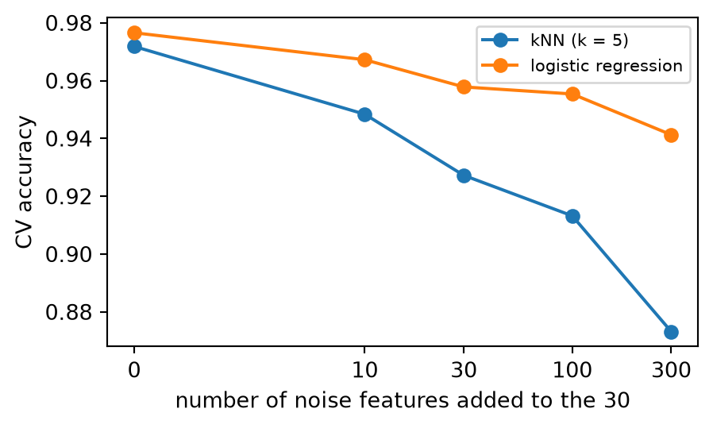
kNN falls from 0.972 to 0.873; logistic regression, which can give the noise features small weights, only from 0.977 to 0.941. kNN has no weights: every feature enters the distance equally, so useless features drown the useful ones. This is the peaking of 5b, seen from the side of the model. For kNN, feature selection (filter 3b, wrapper 4b, embedded 5a) or extraction (PCA, 5b) is part of the method, not an option.
Brute force computes \(n\) distances for every prediction: \(O(nd)\) per query. A kd-tree (Bentley, 1975) organises the training set once:
On average \(O(\log n)\) per query in few dimensions. It is a tree of boxes, as in 6a, but built to search, not to predict.
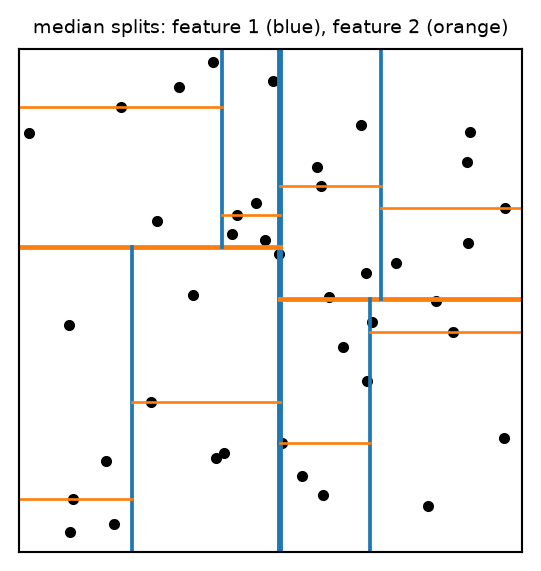
In many dimensions the ball around the query crosses almost every splitting line (the curse again), and the search degrades towards brute force. Ball trees (nested hyperspheres) degrade more slowly. scikit-learn chooses with algorithm="auto"; the results are the same, only the time changes.
kNN keeps all the training samples and treats them alike. An SVM learns which samples matter and how much, and keeps only those: the support vectors.
Important
Notation: for SVMs the two classes are coded \(y_i \in \{-1, +1\}\), not \(\{0, 1\}\) as in 3a, as in AdaBoost (6b). The algebra needs it: \(y_i f(\mathbf{x}_i) > 0\) means “correctly classified” for both classes. scikit-learn does the recoding internally; you can pass 0/1 labels.
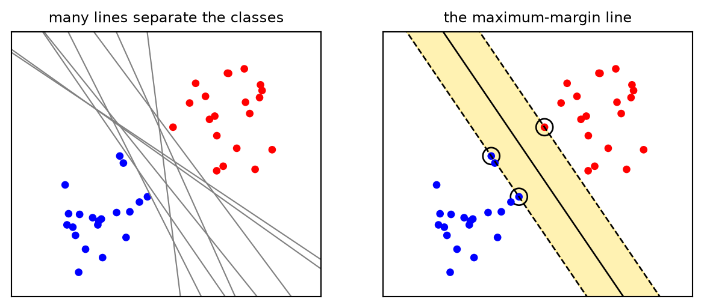
All the lines on the left have zero training error: the training loss cannot choose between them. The SVM chooses the line that stays as far as possible from both classes: the widest band (yellow) that can be drawn between them. A new sample that falls a little away from its class is still on the right side. The band touches a few samples (circled): the support vectors. Move any other sample (without crossing the band) and the line does not change.
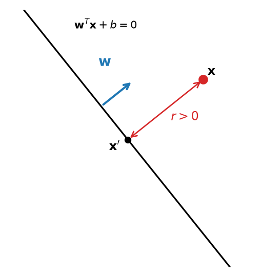
First, pure geometry. A hyperplane in \(\mathbb{R}^d\) (a line for \(d = 2\)) is the set of points with \(\mathbf{w}^{T}\mathbf{x} + b = 0\); the vector \(\mathbf{w}\) is perpendicular to it.
How far is a point \(\mathbf{x}\) from it? Let \(r\) be its signed distance (positive on the side \(\mathbf{w}\) points to) and \(\mathbf{x}'\) its projection on the hyperplane. Going from \(\mathbf{x}\) to \(\mathbf{x}'\) means moving by \(r\) against the unit vector \(\mathbf{w}/\lVert\mathbf{w}\rVert\): \[ \mathbf{x}' = \mathbf{x} - r\,\frac{\mathbf{w}}{\lVert\mathbf{w}\rVert} \] Since \(\mathbf{x}'\) is on the hyperplane, \(\mathbf{w}^{T}\mathbf{x}' + b = 0\); with \(\mathbf{w}^{T}\mathbf{w} = \lVert\mathbf{w}\rVert^2\) this gives \(\mathbf{w}^{T}\mathbf{x} + b - r\,\lVert\mathbf{w}\rVert = 0\), so \[ r = \frac{\mathbf{w}^{T}\mathbf{x} + b}{\lVert\mathbf{w}\rVert} \]
The value \(\mathbf{w}^{T}\mathbf{x} + b\) is the distance from the hyperplane in units of \(1/\lVert\mathbf{w}\rVert\), its sign telling the side. Now use the hyperplane to separate two classes, labelled \(y = \pm 1\), with the score \(f(\mathbf{x}) = \mathbf{w}^{T}\mathbf{x} + b\) (decision_function) and the prediction \(\mathrm{sign}\,f(\mathbf{x})\): the product \(y\,f(\mathbf{x})\), the functional margin, is positive when a sample is on the side of its class, and \(y\,f(\mathbf{x})/\lVert\mathbf{w}\rVert\) is then its distance from the boundary.
Multiplying \(\mathbf{w}\) and \(b\) by any positive number does not change the boundary. We fix the scale (canonical normalisation) so that the samples closest to the boundary have \(y_i f(\mathbf{x}_i) = 1\), and then every sample satisfies \[ y_i\,(\mathbf{w}^{T}\mathbf{x}_i + b) \ge 1, \qquad i = 1, \dots, n \] The samples with equality are the support vectors. They lie on the two lines \(f(\mathbf{x}) = \pm 1\), at distance \(1/\lVert\mathbf{w}\rVert\) from the boundary, so the band between the classes has width \[ \text{margin} = \frac{2}{\lVert\mathbf{w}\rVert} \]
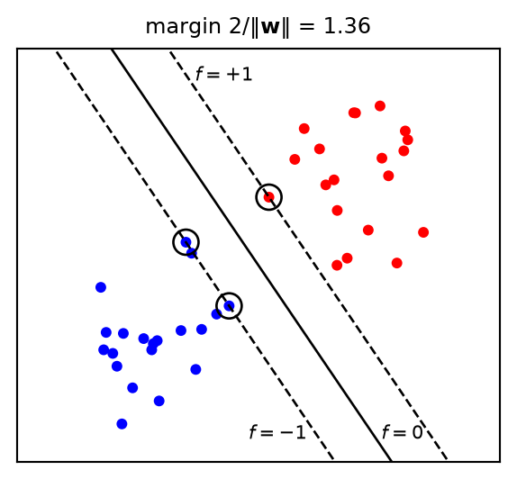
Maximising the margin \(2/\lVert\mathbf{w}\rVert\) is the same as minimising \(\lVert\mathbf{w}\rVert^2\), under the condition that every sample is on the correct side, outside the band:
\[ \min_{\mathbf{w}, b}\ \frac{1}{2}\lVert\mathbf{w}\rVert^2 \quad \text{subject to} \quad y_i\,(\mathbf{w}^{T}\mathbf{x}_i + b) \ge 1, \quad i = 1, \dots, n \]
In 5b, PCA maximised a variance under one equality constraint, and a Lagrange multiplier turned it into \(\boldsymbol\Sigma\mathbf{v} = \lambda\mathbf{v}\). Here there are \(n\) inequality constraints: one multiplier \(\alpha_i \ge 0\) per sample, \[ \mathcal{L}(\mathbf{w}, b, \boldsymbol\alpha) = \frac{1}{2}\lVert\mathbf{w}\rVert^2 - \sum_{i=1}^{n}\alpha_i\left[y_i(\mathbf{w}^{T}\mathbf{x}_i + b) - 1\right] \] Each term in the sum is a penalty that grows if sample \(i\) violates its constraint. At the optimum, the derivatives with respect to \(\mathbf{w}\) and \(b\) vanish (stationarity): \[ \frac{\partial\mathcal{L}}{\partial\mathbf{w}} = \mathbf{w} - \sum_{i=1}^{n}\alpha_i y_i\mathbf{x}_i = \mathbf{0} \;\Rightarrow\; \mathbf{w} = \sum_{i=1}^{n}\alpha_i y_i\mathbf{x}_i, \qquad \frac{\partial\mathcal{L}}{\partial b} = -\sum_{i=1}^{n}\alpha_i y_i = 0 \]
The first result is already remarkable: the optimal weight vector is a combination of the training samples, each with weight \(\alpha_i y_i\). Samples with \(\alpha_i = 0\) do not contribute to \(\mathbf{w}\) at all.
Put the stationarity conditions back into \[ \mathcal{L} = \frac{1}{2}\lVert\mathbf{w}\rVert^2 - \sum_i \alpha_i y_i\,\mathbf{w}^{T}\mathbf{x}_i - b\sum_i \alpha_i y_i + \sum_i \alpha_i \] With \(\mathbf{w} = \sum_j \alpha_j y_j \mathbf{x}_j\), the first two terms are the same double sum, \(Q = \sum_i\sum_j \alpha_i\alpha_j\,y_i y_j\,\mathbf{x}_i^{T}\mathbf{x}_j\): \[ \frac{1}{2}\lVert\mathbf{w}\rVert^2 = \frac{1}{2}\,\mathbf{w}^{T}\mathbf{w} = \frac{1}{2}\,Q, \qquad \sum_i \alpha_i y_i\,\mathbf{w}^{T}\mathbf{x}_i = Q \] and the third vanishes, since \(\sum_i \alpha_i y_i = 0\). What is left, \(\frac{1}{2}Q - Q + \sum_i \alpha_i\), depends on \(\boldsymbol\alpha\) only: it is the minimum of \(\mathcal{L}\) over \((\mathbf{w}, b)\) for a given \(\boldsymbol\alpha\), the dual function \(D(\boldsymbol\alpha)\).
The dual problem maximises it: \[ \max_{\boldsymbol\alpha}\ \sum_{i=1}^{n}\alpha_i - \frac{1}{2}\sum_{i=1}^{n}\sum_{j=1}^{n}\alpha_i\alpha_j\,y_i y_j\,\mathbf{x}_i^{T}\mathbf{x}_j \] subject to \(\alpha_i \ge 0\) and \(\sum_{i}\alpha_i y_i = 0\) (the condition from \(\partial\mathcal{L}/\partial b\), now a constraint). The classifier becomes \[ f(\mathbf{x}) = \mathbf{w}^{T}\mathbf{x} + b = \sum_{i=1}^{n}\alpha_i y_i\,\mathbf{x}_i^{T}\mathbf{x} + b \]
Two observations that the rest of the lecture builds on. First, the data enter only through inner products \(\mathbf{x}_i^{T}\mathbf{x}_j\), the entries of the \(n \times n\) Gram matrix \(\mathbf{K}\), and \(\mathbf{x}_i^{T}\mathbf{x}\) at prediction: a measure of similarity between samples. Second, the number of unknowns is \(n\), whatever the number of features \(d\): that will allow \(d\) to be very large, even infinite. The objective is a concave quadratic in \(\boldsymbol\alpha\) (minus a sum of squares, \(-\frac{1}{2}\lVert\sum_i \alpha_i y_i \mathbf{x}_i\rVert^2\), plus a linear term): a single maximum.
Write \(g_i = y_i(\mathbf{w}^{T}\mathbf{x}_i + b) - 1\), so that \(\mathcal{L} = \frac{1}{2}\lVert\mathbf{w}\rVert^2 - \sum_i \alpha_i g_i\). Let \(p^*\) be the optimal value of the primal, reached at \((\mathbf{w}^*, b^*)\), and \(D(\boldsymbol\alpha) = \min_{\mathbf{w}, b}\mathcal{L}\) the dual function of the previous slide.
In 5a, the Karush–Kuhn–Tucker (KKT) conditions told us which Lasso weights are zero. For the SVM, at the optimum \((\mathbf{w}^*, b^*, \boldsymbol\alpha^*)\):
The last one, derived on the previous slide, says that, for each sample, either \(\alpha_i = 0\) or the sample is exactly on the margin:
Note
KKT conditions act as a gatekeeper: in the Lasso (5a) they switch features off (\(w_j = 0\) unless the gradient reaches \(\lambda\)); in the SVM they switch samples off (\(\alpha_i = 0\) unless the sample is on the margin). Both are sparse solutions of a convex problem.
An illustration of the last three slides, in the smallest example: one sample, \(x_1 = 1\) with \(y_1 = +1\), no bias. The primal is \(\min_w \frac{1}{2}w^2\) subject to \(w \ge 1\), and \(\mathcal{L}(w, \alpha) = \frac{1}{2}w^2 - \alpha(w - 1)\). The inner minimum, at \(w = \alpha\), gives the dual function \(\alpha - \frac{1}{2}\alpha^2\).
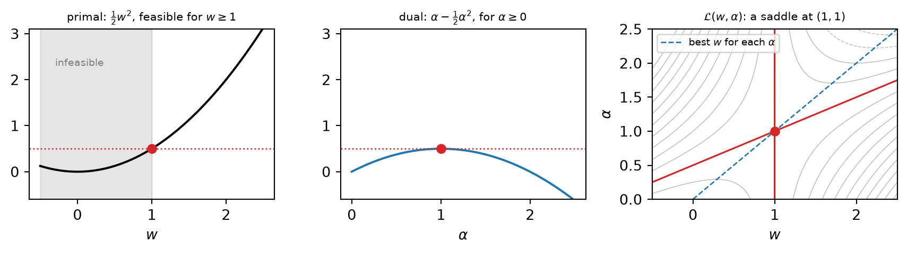
Every value of the dual (centre) lies below every feasible value of the primal (left): weak duality. The two meet at \(p^* = d^* = \frac{1}{2}\) (dotted), at \(w^* = 1\), \(\alpha^* = 1\): a saddle point of \(\mathcal{L}\) (right), a minimum along \(w\) and a maximum along \(\alpha\). The constraint is active (\(w^* = 1\)) and \(\alpha^* > 0\): the sample is a support vector. Had the constraint been, say, \(w \ge -1\), the optimum would be \(w^* = 0\) with the constraint slack, and then \(\alpha^* = 0\): complementary slackness.
Real classes overlap, and the hard margin has no solution. The soft margin gives each sample a slack \(\xi_i \ge 0\), the amount by which it violates the margin, and charges for it: \[ \min_{\mathbf{w}, b, \boldsymbol\xi}\ \frac{1}{2}\lVert\mathbf{w}\rVert^2 + C\sum_{i=1}^{n}\xi_i \quad \text{s.t.} \quad y_i(\mathbf{w}^{T}\mathbf{x}_i + b) \ge 1 - \xi_i,\ \ \xi_i \ge 0 \]
\(C > 0\) sets the price of a violation: large \(C\), few violations and a narrow band; small \(C\), a wide band with many samples inside it.
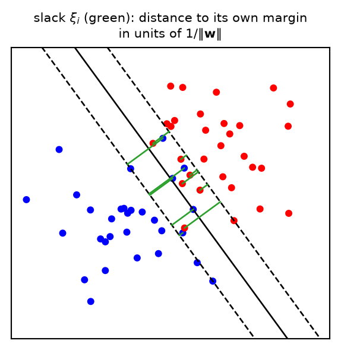
The derivation repeats the hard-margin one, with one more set of constraints, \(\xi_i \ge 0\), and so one more set of multipliers, \(\mu_i \ge 0\). What changes:
| Hard margin | Soft margin | |
|---|---|---|
| primal | \(\min\ \frac{1}{2}\lVert\mathbf{w}\rVert^2\) | \(\min\ \frac{1}{2}\lVert\mathbf{w}\rVert^2 + C\sum_i \xi_i\) |
| constraints | \(y_i f(\mathbf{x}_i) \ge 1\) | \(y_i f(\mathbf{x}_i) \ge 1 - \xi_i\) and \(\xi_i \ge 0\) |
| multipliers | \(\alpha_i \ge 0\) | \(\alpha_i \ge 0\) and \(\mu_i \ge 0\) |
| stationarity | in \(\mathbf{w}\) and \(b\) | in \(\mathbf{w}\) and \(b\) (the same), and in \(\xi_i\): \(C - \alpha_i - \mu_i = 0\) |
| dual objective | \(\sum_i \alpha_i - \frac{1}{2}\sum_{i,j}\alpha_i\alpha_j\,y_i y_j\,\mathbf{x}_i^{T}\mathbf{x}_j\) | the same |
| dual constraints | \(\alpha_i \ge 0\), \(\sum_i \alpha_i y_i = 0\) | \(0 \le \alpha_i \le C\), \(\sum_i \alpha_i y_i = 0\) |
Two lines of the table need a reason. The same dual objective: the Lagrangian is \(\mathcal{L} = \frac{1}{2}\lVert\mathbf{w}\rVert^2 + C\sum_i\xi_i - \sum_i \alpha_i\left[y_i f(\mathbf{x}_i) - 1 + \xi_i\right] - \sum_i \mu_i\xi_i\); its terms in \(\xi_i\) add up to \(\sum_i (C - \alpha_i - \mu_i)\,\xi_i\), which is zero by the new stationarity condition, and what is left is the hard-margin Lagrangian. The box: \(\mu_i = C - \alpha_i\) must be \(\ge 0\), so \(\alpha_i \le C\). Since \(\mathbf{w} = \sum_i \alpha_i y_i \mathbf{x}_i\), no sample can have more than \(C\) of influence on the boundary: a single outlier cannot drag it, as it would with the hard margin.
Complementary slackness now holds for both constraints: \(\alpha_i\left[y_i f(\mathbf{x}_i) - 1 + \xi_i\right] = 0\) and \(\mu_i\,\xi_i = 0\), with \(\mu_i = C - \alpha_i\). Three cases:
The support vectors are the last two groups.
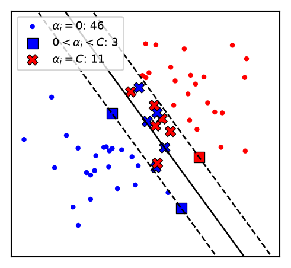
The dual searches \(\boldsymbol\alpha\) in the box \([0, C]^n\), cut by the hyperplane \(\sum_i \alpha_i y_i = 0\). With two samples of opposite classes the constraint is \(\alpha_1 = \alpha_2\), and the whole problem can be drawn:
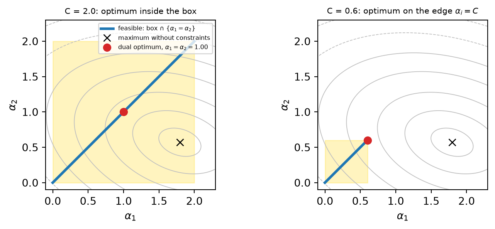
Grey: contours of the dual objective, a concave quadratic whose free maximum (×) violates \(\sum_i \alpha_i y_i = 0\). The optimum is the point where the feasible segment touches the highest contour. With \(C = 2\) it is inside the box, \(0 < \alpha_i < C\): both samples are on the margin. With \(C = 0.6\) the segment is cut short and the optimum is the corner \(\alpha_i = C\): the two samples are inside the band. With \(n\) samples the region is a polytope, the slice of an \(n\)-dimensional box by a hyperplane, and the optimum sits on its faces: coordinates at 0 (outside the band), at \(C\) (inside it), or in between (on the margin). libsvm’s solver (SMO, Platt 1998) moves two multipliers at a time, along exactly such a segment, keeping \(\sum_i \alpha_i y_i = 0\).
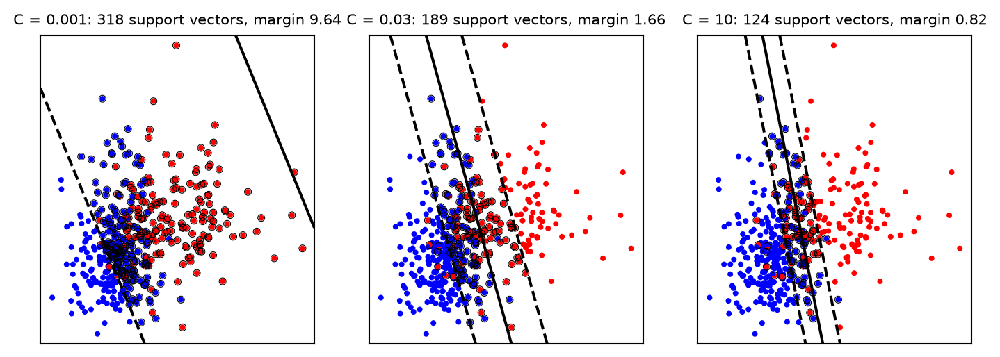
Mean radius and mean texture (scaled inside a pipeline; the margin is in scaled units), support vectors circled. With small \(C\) violations are cheap: a wide band, many support vectors, a strongly regularised model (high bias). With large \(C\) the band narrows to avoid violations, few samples remain support vectors, and the model follows the data more closely (high variance). The number of support vectors is a rough measure of complexity; \(C\) is chosen by CV.
A linear SVM draws straight boundaries. The rings of 5b cannot be separated by a line, but a new feature, the squared distance from the centre \(x_1^2 + x_2^2\), separates them with a plane:
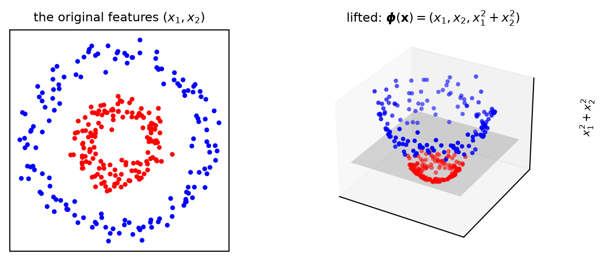
A feature map \(\boldsymbol\phi(\mathbf{x})\) lifts the data into a space where a linear boundary works; back in the original space, the boundary is a circle. This is what PolynomialFeatures (3b) does explicitly. The difficulty: with many features and high degrees, the number of new features explodes (\(d = 30\), degree 3: about 5500).
The dual needs only inner products. In the lifted space they are \(\boldsymbol\phi(\mathbf{x}_i)^\mathsf{T}\boldsymbol\phi(\mathbf{x}_j)\), and for some maps they can be computed without computing \(\boldsymbol\phi\). For two features and \(\boldsymbol\phi(\mathbf{x}) = (x_1^2,\ \sqrt{2}\,x_1 x_2,\ x_2^2)\): \[ \boldsymbol\phi(\mathbf{a})^\mathsf{T}\boldsymbol\phi(\mathbf{b}) = a_1^2 b_1^2 + 2\,a_1 a_2 b_1 b_2 + a_2^2 b_2^2 = (a_1 b_1 + a_2 b_2)^2 = (\mathbf{a}^{T}\mathbf{b})^2 \]
phi(a)^T phi(b) = 25.0 (a^T b)^2 = 25.0A kernel is a function \(K(\mathbf{x}, \mathbf{x}') = \boldsymbol\phi(\mathbf{x})^\mathsf{T}\boldsymbol\phi(\mathbf{x}')\) that computes an inner product in a lifted space at the cost of an operation in the original one. Replace every \(\mathbf{x}_i^{T}\mathbf{x}_j\) in the dual by \(K(\mathbf{x}_i, \mathbf{x}_j)\), and the SVM is linear in the lifted space, non-linear in ours: \[ f(\mathbf{x}) = \sum_{i=1}^{n}\alpha_i y_i\,K(\mathbf{x}_i, \mathbf{x}) + b \] The same trick made PCA non-linear in 5b (kernel PCA). The lifted space can be huge, even infinite-dimensional: we never go there.
Go back to the soft-margin SVM and replace every inner product \(\mathbf{x}_i^{T}\mathbf{x}_j\) by \(K(\mathbf{x}_i, \mathbf{x}_j)\). Three places change, and only these.
Training, the dual: the data enter only through the \(n \times n\) Gram matrix \(\mathbf{K}\), \[ \max_{\boldsymbol\alpha}\ \sum_{i}\alpha_i - \frac{1}{2}\sum_{i,j}\alpha_i\alpha_j\,y_i y_j\,\underbrace{K(\mathbf{x}_i, \mathbf{x}_j)}_{\text{was } \mathbf{x}_i^{T}\mathbf{x}_j} \] with the same constraints, \(0 \le \alpha_i \le C\) and \(\sum_i \alpha_i y_i = 0\).
The weights: \(\mathbf{w} = \sum_i \alpha_i y_i\,\boldsymbol\phi(\mathbf{x}_i)\) live in the lifted space and are never computed (no coef_ for non-linear kernels).
The bias, from any support vector \(s\) on the margin (\(0 < \alpha_s < C\), so \(y_s f(\mathbf{x}_s) = 1\); multiplying by \(y_s\), with \(y_s^2 = 1\), \(f(\mathbf{x}_s) = y_s\)): \[ b = y_s - \sum_{i} \alpha_i y_i\,K(\mathbf{x}_i, \mathbf{x}_s) \] Prediction: one kernel evaluation per support vector, \[ f(\mathbf{x}) = \sum_{i \in \text{SV}} \alpha_i y_i\,K(\mathbf{x}_i, \mathbf{x}) + b \]
Everything else is unchanged: the same quadratic program, the same KKT conditions, the same three groups of samples. The kernel is the SVM’s only access to the data. scikit-learn stores exactly these pieces: dual_coef_ holds \(\alpha_i y_i\), support_vectors_ the \(\mathbf{x}_i\), intercept_ the \(b\), and decision_function computes the sum above.
The most used kernel, the radial basis function (Gaussian): \[ K(\mathbf{x}, \mathbf{x}') = \exp\left(-\gamma\,\lVert\mathbf{x} - \mathbf{x}'\rVert^2\right) \] is 1 for identical samples and falls to 0 with distance: it is a similarity. Its parameter \(\gamma > 0\) sets the reach: the similarity drops to \(e^{-1}\) at distance \(1/\sqrt{\gamma}\). Read the decision function with it: each support vector votes for its class \(y_i\), with strength \(\alpha_i\), discounted by its similarity to \(\mathbf{x}\).
A distance-weighted vote of neighbours, as in kNN, but with only the support vectors voting, and their weights \(\alpha_i\) learned by an optimisation instead of fixed.
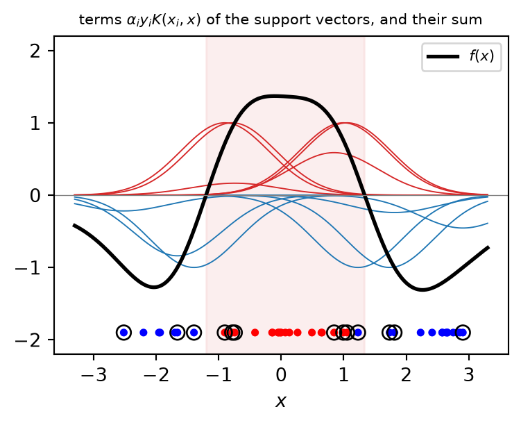
One feature, class +1 (red) in the middle: no single threshold separates it. Each support vector (circled, bottom) contributes a bump centred on itself, positive for red and negative for blue; their sum plus \(b\) is the score, and the shaded region is where it is positive. Only 13 of the 40 samples carry a bump.
| Kernel | \(K(\mathbf{x}, \mathbf{x}')\) | scikit-learn | When |
|---|---|---|---|
| linear | \(\mathbf{x}^{T}\mathbf{x}'\) | kernel="linear" (or LinearSVC) |
many features, nearly linear problems, text |
| polynomial | \((\gamma\,\mathbf{x}^{T}\mathbf{x}' + c_0)^q\) | kernel="poly", degree=q, coef0=c0 |
interactions up to degree \(q\) (as PolynomialFeatures, 3b) |
| RBF (Gaussian) | \(\exp(-\gamma\lVert\mathbf{x} - \mathbf{x}'\rVert^2)\) | kernel="rbf" (default) |
the general-purpose choice |
| sigmoid | \(\tanh(\gamma\,\mathbf{x}^{T}\mathbf{x}' + c_0)\) | kernel="sigmoid" |
rarely: not always a valid kernel |
Not every function is a kernel: it must correspond to an inner product in some space. The condition (Mercer) is that every Gram matrix \(\mathbf{K}\) it produces is positive semi-definite, which keeps the dual a convex problem with a single maximum. Kernels can be added and multiplied, and built for strings, graphs or images: a kernel is a way of putting domain knowledge about similarity into the model. The default gamma="scale" sets \(\gamma = 1/(d\,\mathrm{Var}(\mathbf{X}))\): about \(1/d\) for standardised features. With the RBF kernel, \(\gamma\) (how far each support vector reaches) and \(C\) (how much violations cost) both control complexity: tune them together on logarithmic grids (GridSearchCV, 4b). On breast cancer the best pair is \(C = 10\), \(\gamma = 0.01\) (CV accuracy 0.981): a small \(\gamma\), an almost linear model.
Back to the soft margin. At the optimum each slack is as small as its constraint allows, \(\xi_i = \max\left(0,\ 1 - y_i f(\mathbf{x}_i)\right)\), and the SVM becomes an unconstrained problem: \[ \min_{\mathbf{w}, b}\ \underbrace{\sum_{i=1}^{n}\max\left(0,\ 1 - y_i f(\mathbf{x}_i)\right)}_{\text{hinge loss}} + \underbrace{\frac{1}{2C}\lVert\mathbf{w}\rVert^2}_{\text{L2 penalty, } \lambda = 1/(2C)} \] the form “loss + \(\lambda\,\)penalty” of regularised logistic regression (5a), with the hinge loss in place of the log-loss.
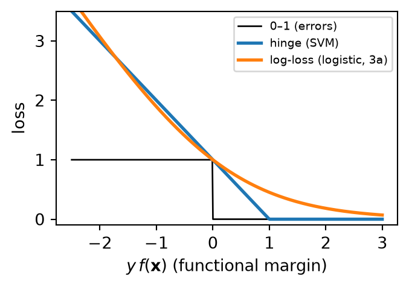
| Logistic regression | Linear SVM | |
|---|---|---|
| loss | log-loss | hinge |
| output | probabilities \(\hat p = \sigma(f)\) | scores \(f(\mathbf{x})\) |
| samples that matter | all, with decreasing weight | only the support vectors |
The same model and penalty, two losses. Beyond the margin (\(y f \ge 1\)) the hinge loss is exactly zero: well-classified samples have no influence, which is where the sparsity of the support vectors comes from; the log-loss never reaches zero, so every sample keeps some influence. On breast cancer (all features, scaled, five folds) the two score the same, 0.977 (LinearSVC, which uses the squared hinge, 0.972). For probabilities from an SVM, probability=True fits \(\hat p = \sigma(a f + b)\) on the scores by internal CV (Platt scaling); ROC curves (4a) work directly on the scores.
SVR keeps the margin idea for regression: errors smaller than \(\varepsilon\) cost nothing (a tube around the prediction), larger ones cost linearly: \[ L_\varepsilon(y, f) = \max\left(0,\ \lvert y - f(\mathbf{x})\rvert - \varepsilon\right) \] plus the same L2 penalty. The samples inside the tube have \(\alpha_i = 0\); the support vectors are on or outside it. Kernels work as in classification.
Diabetes, bmi only, \(\varepsilon = 50\) (in units of the target). The samples inside the tube (grey) play no role, as the samples outside the margin of a classifier. With the absolute loss outside the tube, SVR is robust to outliers, like the Huber loss of 2b. On all ten features, a tuned SVR (C, epsilon and gamma by grid search) reaches a CV \(R^2\) of 0.552, against 0.522 for linear regression: a small gain, and an optimistic one, since it is the best of 36 candidates (4b).
Pipeline(steps=[('standardscaler', StandardScaler()),
('svr', SVR(C=100, epsilon=50))])In a Jupyter environment, please rerun this cell to show the HTML representation or trust the notebook. | x0 |
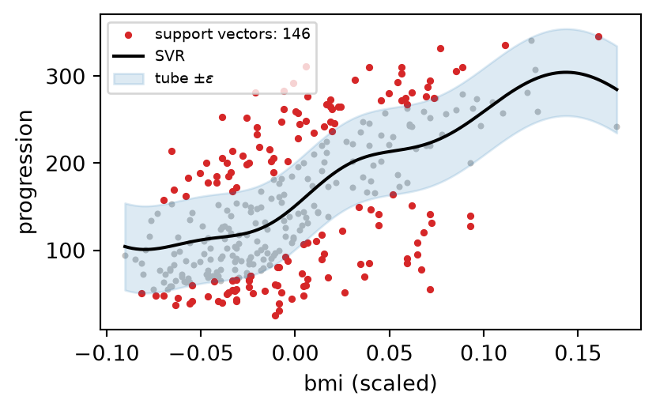
Today’s models, with the logistic regression of 3a–5a and the random forest of 6b, on the same five folds of three datasets (default settings, features scaled except for the forest; the axis starts at 0.5):
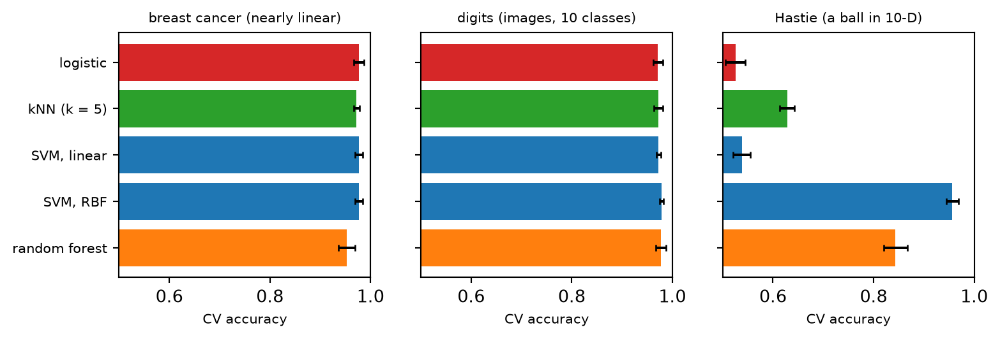
Tip
Take-home. On breast cancer, the linear models remain the best (0.977), with kNN and the RBF SVM just behind and the forest last. On digits, all methods are within 0.01 of each other (0.971–0.978): good features (pixels of centred digits) make the choice of model less important. On Hastie, the RBF SVM wins clearly (0.957, above every ensemble of 6b), while kNN reaches only 0.628: both use distances, but the boundary is a sphere, a smooth shape that a sum of Gaussian bumps fits well, whereas the 5 nearest neighbours in 10 dimensions are not local. The geometry of the data, not the reputation of the method, decides.
| Element | kNN | SVM (classification) | SVR |
|---|---|---|---|
| Model \(H\) | the training set, a distance, \(k\) | \(f(\mathbf{x}) = \sum_i \alpha_i y_i K(\mathbf{x}_i, \mathbf{x}) + b\) | \(f(\mathbf{x}) = \sum_i (\alpha_i - \alpha_i^*) K(\mathbf{x}_i, \mathbf{x}) + b\) |
| Strategy \(L\) | none (local vote or mean) | hinge loss + L2 penalty (maximum margin) | \(\varepsilon\)-insensitive loss + L2 penalty |
| Algorithm \(A\) | neighbour search (brute force, kd-tree, ball tree) | quadratic programming in the dual | the same |
| Hyperparameters | n_neighbors, weights, metric, p |
C, kernel, gamma, degree |
C, epsilon, kernel, gamma |
| Needs | scaling, few relevant features | scaling | scaling |
| scikit-learn | KNeighborsClassifier, KNeighborsRegressor |
SVC, LinearSVC |
SVR, LinearSVR |
Both are similarity-based: kNN uses a fixed similarity and all the samples; the SVM learns which samples matter and how much. In SVR each sample has two multipliers, \(\alpha_i\) and \(\alpha_i^*\), for the two sides of the tube.
C and gamma from \(10^{-3}\) to \(10^{3}\), together (GridSearchCV or RandomizedSearchCV with loguniform, 4b)decision_function): use them for ROC and precision–recall (4a); add probability=True (Platt scaling) or CalibratedClassifierCV only if you need probabilities, and check their calibration (4a)SVC slow (training time grows between \(n^2\) and \(n^3\)): prefer LinearSVC, SGDClassifier(loss="hinge"), a kernel approximation (Nystroem), or a tree ensemble (6b)SVC trains one SVM per pair of classes (one-vs-one), LinearSVC one per class (one-vs-rest, 3a)KNNImputer fills missing values from similar samples (3b), and 7b uses neighbours for clustering and anomaly detectionA sensible CW2 comparison on most tabular datasets: the CW1 linear model, one similarity-based model (kNN or an RBF SVM) and one tree ensemble, on the same folds, each tuned with a similar budget.
When you use kNN or an SVM, check:
C and gamma, were chosen by cross-validation on logarithmic grids, and that the best values are not on the edge of the gridgamma that is too large)Suggested readings:
C and gamma.Suggested activities:
SelectKBest (3b) inside the kNN pipeline: how much of the loss is recovered?C on breast cancer and plot the number of support vectors and the CV accuracy against C.SVC(kernel="rbf") with KNeighborsClassifier(weights="distance") on digits as the training set shrinks from 1300 to 100 images.For CW2 (2–3 scikit-learn tools on your CW1 dataset, critical comparison, best pipeline: deadlines and the brief on Moodle), today’s concepts the coursework expects you to use and discuss:
KNeighborsClassifier/Regressor, SVC, LinearSVC, SVR) as candidate tools, in a pipeline with scaling, compared with the CW1 model and a baseline on the same foldsC and gamma, together) chosen by cross-validation on logarithmic gridsC and gammaTip
Next lecture: clustering (7b), learning without labels, and the closing map of the methods of weeks 2–7.
ENG4200 AI4